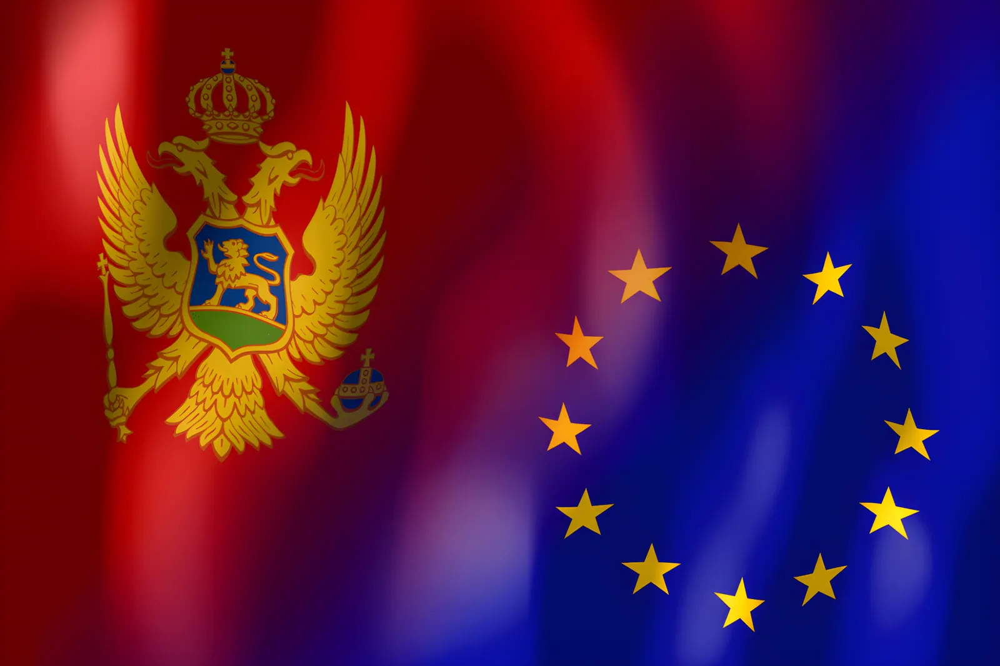

Le 22 avril 2026, les ambassadeurs des Vingt-Sept ont validé la création d'un groupe de travail chargé de préparer le traité d'adhésion du Monténégro à l'Union européenne — une première depuis l'intégration de la Croatie en 2013. Après quatorze ans de négociations et 14 chapitres clôturés sur 33, ce petit État des Balkans occidentaux de 626 000 habitants est désormais le candidat le plus avancé dans le processus d'élargissement. L'horizon 2028 pour une adhésion effective est officiellement jugé atteignable par Bruxelles, mais d'importants verrous — État de droit, criminalité organisée, question monétaire — demeurent ouverts.
Le Monténégro est l'un des plus petits États d'Europe, avec une superficie de 13 812 km² et une population d'environ 626 000 habitants. Situé dans les Balkans occidentaux, il est entouré par la Serbie, la Bosnie-Herzégovine, la Croatie, l'Albanie et le Kosovo. Podgorica est sa capitale, et le pays est une démocratie parlementaire depuis la proclamation de son indépendance le 3 juin 2006, à la suite d'un référendum où 55,5 % des votants ont choisi de se séparer de la Serbie-et-Monténégro.
Dès son indépendance, le Monténégro a adopté unilatéralement l'euro comme monnaie nationale — sans être membre de la zone euro ni avoir signé d'accord monétaire avec l'Union européenne. Cette décision, inédite, constitue un cas particulier dans les négociations d'adhésion : en cas d'entrée dans l'UE, le pays devra formellement rejoindre la zone euro via la procédure standard de convergence, ce qui implique des critères de stabilité que Podgorica devra démontrer.
Le Monténégro a déposé sa demande officielle d'adhésion à l'Union européenne le 15 décembre 2008. Le statut de candidat officiel lui est accordé en décembre 2010 par le Conseil européen, et les négociations sont formellement ouvertes le 29 juin 2012. Depuis lors, 26 conférences d'adhésion ont eu lieu. La dernière s'est tenue le 17 mars 2026, lors de laquelle le chapitre 21 (réseaux transeuropéens — transport, télécommunications, énergie) a été provisoirement clôturé.
Le pays est le quatrième État issu du démembrement de la Yougoslavie à avoir formulé une demande d'adhésion, après la Slovénie (adhérée en 2004), la Croatie (adhérée en 2013) et la Macédoine du Nord. Il est également membre de l'OTAN depuis juin 2017, une intégration atlantique qui constitue un socle de sécurité favorable à son rapprochement avec Bruxelles.
Le Monténégro proclame son indépendance après le référendum. L'Union européenne reconnaît le nouvel État le 12 juin 2006.
Signature d'un accord de stabilisation et d'association (ASA) entre l'UE et le Monténégro, entré en vigueur le 1er mai 2010.
Dépôt de la demande officielle d'adhésion à l'Union européenne.
Le Conseil européen accorde le statut de candidat officiel au Monténégro.
Ouverture officielle des négociations d'adhésion. Les 33 chapitres sont progressivement ouverts à la discussion.
Le Monténégro rejoint l'OTAN, renforçant son ancrage occidental.
Clôture provisoire accélérée : 7 chapitres supplémentaires clôturés en trois conférences d'adhésion successives (16 décembre 2025, 26 janvier 2026, 17 mars 2026). Le total atteint 14 chapitres provisoirement clôturés.
Les ambassadeurs des Vingt-Sept valident la création d'un groupe de travail ad hoc pour rédiger le traité d'adhésion — une étape politiquement majeure, la première du genre depuis l'adhésion de la Croatie en 2013.
Le gouvernement monténégrin vise la conclusion de l'ensemble des négociations sur les 33 chapitres. La Commission européenne juge cet objectif atteignable si les réformes continuent à progresser.
Le 22 avril 2026 marque un tournant symbolique et technique dans le processus d'adhésion du Monténégro. Les ambassadeurs de l'ensemble des États membres ont décidé de créer un groupe de travail ad hoc chargé de rédiger le traité d'adhésion. António Costa, président du Conseil européen, a qualifié cette avancée d'« étape clé » vers l'adhésion, soulignant son importance géopolitique à un moment où l'UE cherche à renforcer sa présence dans les Balkans.
Deux jours plus tard, lors du Comité consultatif mixte (CCM) réuni à Podgorica, la ministre monténégrine des Affaires européennes Maida Gorčević a décrit la rédaction du traité d'adhésion comme le « dernier tour d'un marathon de quatorze ans sur la voie de l'UE ». Le gouvernement du Premier ministre Milojko Spajić ambitionne de clôturer l'ensemble des chapitres de négociation d'ici la fin de l'année 2026, pour une adhésion formelle à l'horizon 2028.
« Félicitations au Monténégro : aujourd'hui, nous avons franchi une étape importante vers votre adhésion à l'Union européenne. »
— António Costa, président du Conseil européen, 22 avril 2026« C'est une excellente nouvelle qui confirme une fois de plus que nous sommes sur la bonne voie pour que le Monténégro devienne le 28e membre de l'Union européenne d'ici 2028. »
— Maida Gorčević, ministre monténégrine des Affaires européennes, avril 2026Le processus d'adhésion à l'UE repose sur la négociation de 33 chapitres thématiques couvrant l'ensemble de l'acquis communautaire, allant de la libre circulation des marchandises à la politique judiciaire, en passant par la fiscalité, l'environnement et la politique sociale. Le Monténégro a ouvert l'intégralité de ces chapitres. Au 17 mars 2026, 14 d'entre eux ont été provisoirement clôturés, contre seulement 7 à l'été 2025.
| Date | Chapitres clôturés | Total |
|---|---|---|
| Juin 2025 | Ch. 5 – Marchés publics | 7 |
| 16 déc. 2025 | Ch. 3, 4, 6, 11, 13 | 12 |
| 26 janv. 2026 | Ch. 32 – Contrôle financier | 13 |
| 17 mars 2026 | Ch. 21 – Réseaux transeuropéens | 14 |
Si la dynamique est inédite depuis des années, plusieurs défis structurels conditionnent la crédibilité du calendrier 2028. Le Monténégro reste l'un des pays les plus pauvres d'Europe, avec environ 20 % de la population exposée à un risque de pauvreté ou d'exclusion sociale. Son PIB par habitant (environ 12 254 euros en 2024) représente moins de la moitié de la moyenne européenne. L'économie repose largement sur le tourisme — qui représente plus du quart du PIB — et reste exposée à d'importants déficits commerciaux.
Sur le plan politique, la stabilité gouvernementale a longtemps été un point de friction. Le Monténégro a connu plusieurs crises institutionnelles entre 2020 et 2023, avant que le gouvernement de Milojko Spajić (Parti Europe maintenant !) ne prenne ses fonctions en octobre 2023 avec un agenda proeuropéen affirmé. Les ingérences étrangères — notamment russes et serbes — font également l'objet d'une surveillance étroite du Parlement européen, qui a rappelé en juin 2025 la nécessité d'une vigilance accrue sur ce point.
La question monétaire constitue enfin un cas particulier : le Monténégro utilise l'euro depuis 2002, unilatéralement, sans avoir adhéré à la zone euro. Une adhésion à l'UE imposerait de régulariser cette situation, soit en formalisant l'usage de l'euro via une procédure de convergence officielle, soit en adoptant temporairement une autre monnaie le temps que les critères soient remplis — une perspective politiquement difficile pour le pays.
L'accélération du dossier monténégrin intervient dans un contexte géopolitique reconfiguré. Depuis l'invasion russe de l'Ukraine en 2022, l'élargissement de l'UE a retrouvé une dimension stratégique que Bruxelles avait longtemps négligée. Le Monténégro, membre de l'OTAN depuis 2017 et frontalier de pays candidats (Serbie, Albanie, Bosnie), représente un maillon central dans la politique d'intégration des Balkans occidentaux. Son éventuelle adhésion d'ici 2028 serait la première depuis celle de la Croatie en 2013, et enverrait un signal fort aux autres candidats de la région — Albanie, Macédoine du Nord, Serbie, Bosnie-Herzégovine — sur la crédibilité du processus. L'enjeu pour l'Europe est de démontrer que l'élargissement n'est pas une promesse gelée, mais un engagement politique concret susceptible de stabiliser durablement une région qui reste, malgré tout, à l'intersection des influences russes, turques et chinoises.